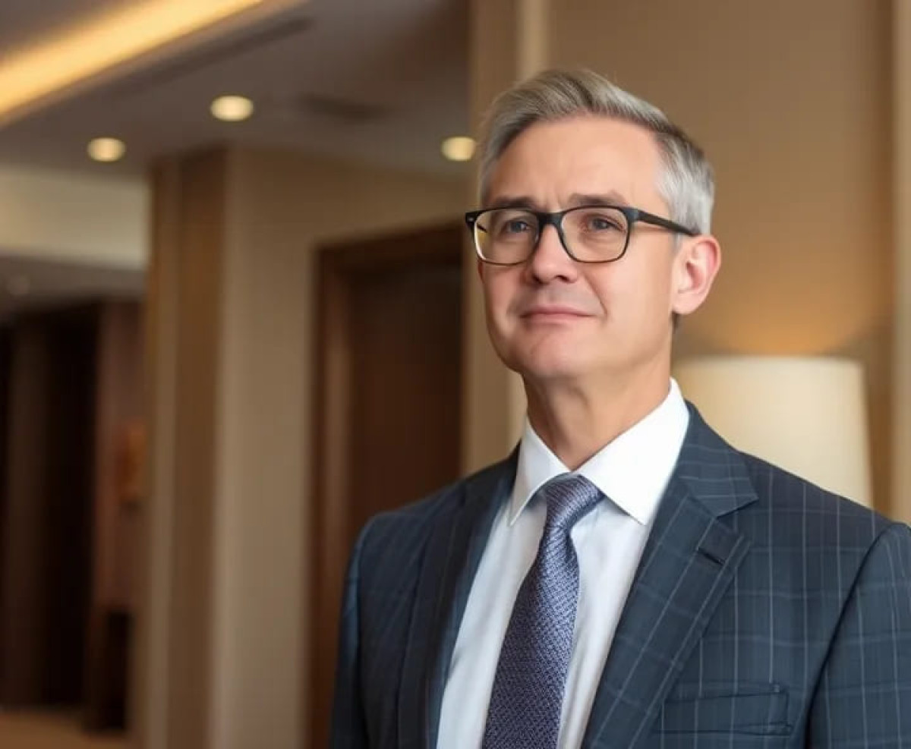
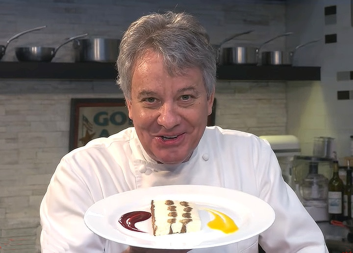
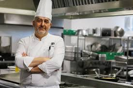
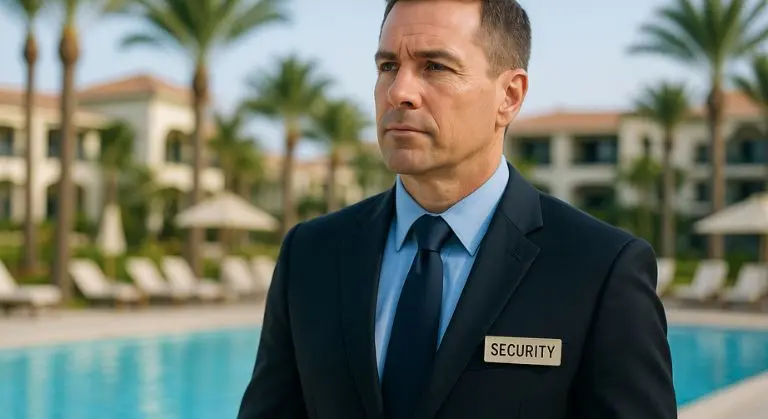

Nuestra historia
En el año 2020, en un momento en que el mundo estaba cambiando rápidamente, un grupo de visionarios decidió crear un hotel que fuera un refugio de lujo y tranquilidad para aquellos que buscaban escapar del estrés diario. Así nació "El hotelluxury", un hotel de 5 estrellas ubicado en un lugar privilegiado de la ciudad, rodeado de jardines exuberantes y vistas impresionantes.
Valores
- Hospitalidad
- Calidad
- Compromiso
- Sostenibilidad
Nuestro equipo
Fundador
Francisco Miguel - un empresario visionario y apasionado por la hospitalidad, con una visión clara de crear un refugio de lujo y tranquilidad para sus huéspedes.

Gerente general
Sofía Rodriguez - una líder experimentada y carismática, con una pasión por la excelencia en el servicio al cliente y una dedicación a garantizar la satisfacción de los huéspedes.
Jefa de Resepción
Alejandra García - una profesional amable y eficiente, con una sonrisa cálida y una disposición para ayudar a los huéspedes en todo momento.

Chef
Pierre Dupont - un chef francés con una pasión por la cocina innovadora y una dedicación a crear platos exquisitos que deleiten los sentidos de los huéspedes.

Cocinero
Juan Carlos López - un cocinero talentoso y creativo, con una habilidad para preparar platos deliciosos y presentaciones impresionantes.
Trabajadora de Limpieza
Elena Vázquez - una trabajadora dedicada y eficiente, con una atención al detalle y una capacidad para mantener las habitaciones y áreas comunes del hotel impecables.

Jefe de seguridad
Jorge Iván González - un profesional experimentado y atento, con una dedicación a garantizar la seguridad y la tranquilidad de los huéspedes y empleados del hotel.
Gerente de marketing
Daniela Sánchez - una profesional creativa y dinámica, con una pasión por la promoción y la publicidad, y una dedicación a promocionar los servicios del hotel de manera efectiva.
Visión
El fundador del hotel, un empresario apasionado y visionario, tenía una idea clara de lo que quería crear: un lugar donde los huéspedes pudieran sentirse como reyes, rodeados de lujo y comodidad. Quería que "El hotel luxury” fuera un destino en sí mismo, un lugar donde las personas pudieran venir a relajarse, rejuvenecer y disfrutar de experiencias inolvidables.
Diseño
El hotel fue diseñado por un equipo de arquitectos y diseñadores de renombre, que se inspiraron en la arquitectura moderna y la decoración de lujo. El resultado fue un edificio impresionante, con líneas elegantes y un diseño minimalista que se integra perfectamente con el entorno natural.
Habitaciones
Las habitaciones de "El hotel luxury" son verdaderos refugios de lujo, diseñados para ofrecer la máxima comodidad y relajación. Cada habitación cuenta con una cama comoda y de lujo, un baño de mármol con ducha de lluvia y una terraza con vistas impresionantes hacia el mar y los jardines.
Servicios
El hotel ofrece una variedad de servicios para satisfacer las necesidades de los huéspedes, incluyendo un spa de lujo, un gimnasio de última generación, una piscina al aire libre y restaurantes gourmet que sirven platos exquisitos. El servicio de habitación es personalizado y está disponible las 24 horas.
Experiencia
Desde su apertura en 2020, "El hotel luxury” ha sido un destino popular para aquellos que buscan una experiencia de lujo y relajación. Los huéspedes pueden disfrutar de actividades como yoga y meditación en el jardín, o simplemente relajarse en la piscina o en la terraza de su habitación. El hotel también ofrece paquetes especiales para parejas y eventos corporativos.
Un Lugar para Recordar
"El hotel luxury” es un lugar que deja una huella duradera en los corazones de sus huéspedes. Es un refugio de lujo y tranquilidad, donde se puede escapar del estrés diario y disfrutar de experiencias inolvidables. Si estás buscando un lugar para relajarte y rejuvenecer, "El hotel luxury" es el destino perfecto para ti.